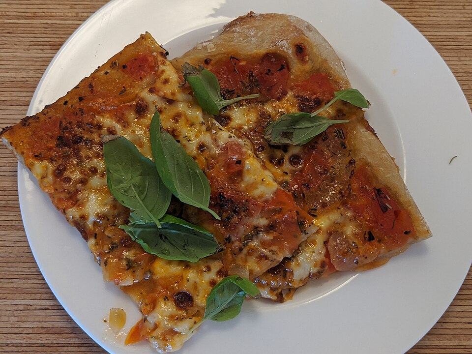

Pizza

Photo: Shisma, CC BY 4.0, via Wikimedia Commons
Description
This classic Margherita pizza keeps things simple: a thin, blistered crust topped with crushed tomatoes, fresh mozzarella, and basil. With so few ingredients, the quality of each one really shows, so use the best tomatoes and mozzarella you can find.
A very hot oven is the secret to a crisp crust and melted, slightly charred cheese. If you have a pizza stone or a heavy baking sheet, preheat it thoroughly before sliding the pizza on — it makes a noticeable difference.
Ingredients
- 1 pound pizza dough, at room temperature
- 1/2 cup crushed San Marzano tomatoes
- 8 ounces fresh mozzarella, torn into pieces
- 1 handful fresh basil leaves
- 2 tablespoons olive oil
- 1 clove garlic, finely grated (optional)
- Salt, to taste
- Flour or semolina, for dusting
Steps
- Place a pizza stone or an inverted baking sheet on the middle rack and preheat the oven to its highest setting, about 500°F (260°C), for at least 30 minutes.
- Lightly flour a work surface and stretch or roll the dough into a thin round, about 10 to 12 inches across.
- Spread the crushed tomatoes over the dough, leaving a small border for the crust. Season with a pinch of salt and the grated garlic, if using.
- Scatter the torn mozzarella over the top.
- Slide the pizza onto the hot stone or baking sheet and bake for 8 to 12 minutes, until the crust is golden and the cheese is bubbling.
- Finish with fresh basil and a drizzle of olive oil, then slice and serve immediately.
Home